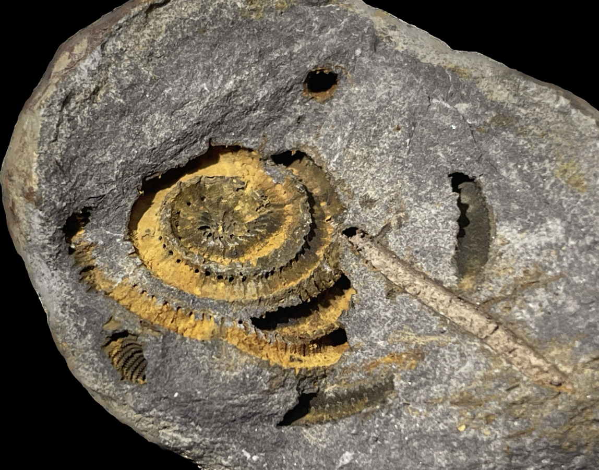
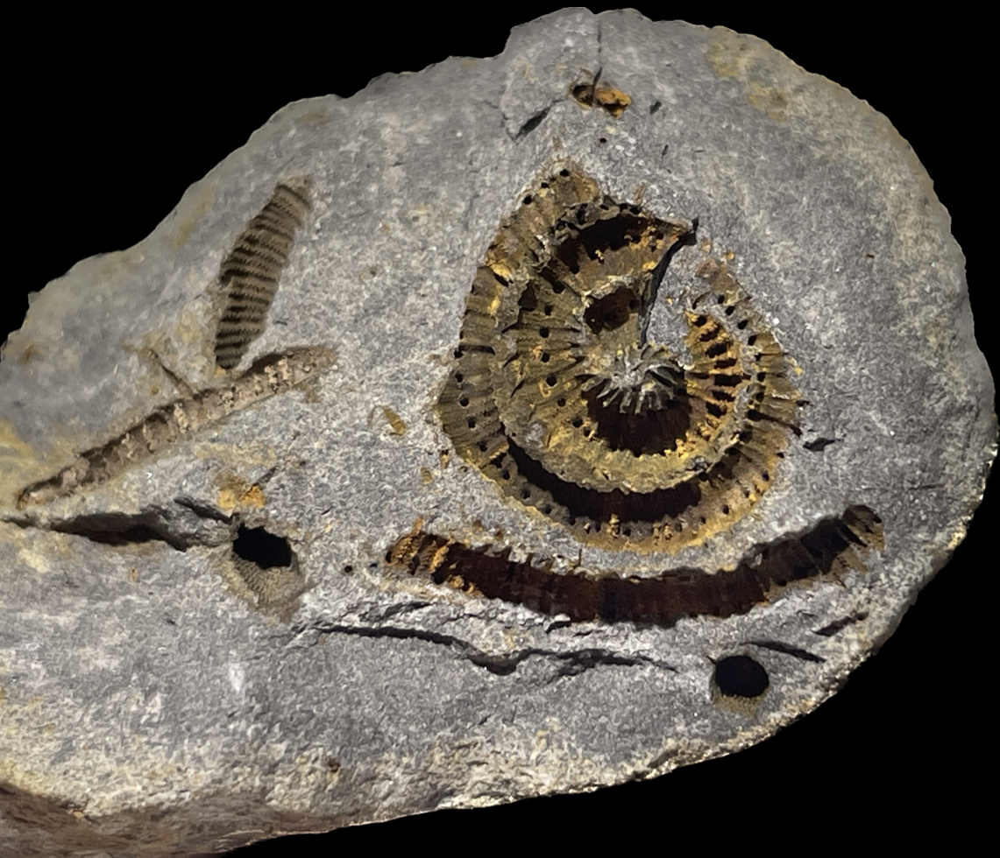

Myelodactylus sp.
• Devonian
• Belen Formation
• Patacamaya (Department of La Paz), Bolivian Altiplano, Bolivia
Size: 1.5 cm across the coiled stem

Copyright © 2024 by Samuel Kim, all rights reserved